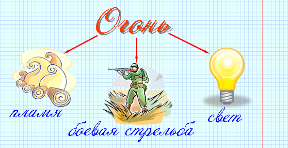

Слово – это мельчайшая значимая единица языка.
|
Лексика – это словарный состав языка, который изучается особой наукой – лексикологией. Слово – это мельчайшая значимая единица языка. |
|
Лексическое значение слова – это то, что оно обозначает, называет. |
|
Однозначные слова – слова с одним лексическим значением. Многозначные слова – слова, имеющие несколько лексических значений. |

 |
Многозначные слова имеют • прямое значение – основное лексическое значение. Например: в словосочетании солнечный луч слово луч употреблено в прямом значении. • переносное значение – значение, которое появляется в результате переносного употребления. Например: в словосочетаниях луч надежды, луч счастья слово луч употреблено в переносном значении. |
|
Синонимы – это слова, имеющие одинаковые или близкие значения и относящиеся к одной и той же части речи. |
|
Слова синонимического ряда различаются оттенками значения и стилистической окраской, но имеют общее значение. Это общее значение выражается основным словом синонимического ряда, которое помещается в словарях первым. |